<html><head><title>PSM</title><style>body{font-family:sans-serif;padding:20px;background:#f4f4f9}.chapter{background:white;padding:20px;margin-bottom:30px}.q{border-bottom:1px solid #ddd;padding:15px}.correct{background:#d4edda}</style></head><body><h1>PSM</h1><div class='chapter'><h2>National Health Programmes III - NIS, JSY, RBSK...</h2><div class='q'><p><b>Q29:</b>               .                .   Š                ?       ˜††† , •“††    . ™†     •‡ -       .         ? 99         ‰           „ ?  Š           ƒç‹      ?      „Å      ê  ? 307                      ? </p><br><div class='correct'>a) ”         </div><div class=''>b)           </div><div class=''>c)  ‰‰ƒ           </div><div class=''>d) ”                   </div><p><i>                              ...</i></p></div><div class='q'><p><b>Q30:</b>        : 67                -     ?   „   „     ‰ ? 198                   ? 251  ‹-- Å  Å      „    Å ’    … .  Å   ,      „   ‘  Å.    ƒ    Å? Answer Key Question No. Correct Option 308 Detailed Explanations                     ? </p><div class='correct'>a) Å    ê     </div><div class=''>b)     ƒ Œ      </div><div class=''>c) Å       ”     </div><div class=''>d) Å    ç  ê   </div><p><i>    ( )        -  .         ...</i></p></div><div class='q'><p><b>Q31:</b>                „     ,                             „       .       ? Answer Key Question No. Correct Option 68 Detailed Explanations  „                            .          ?  Ž   ‰   „        „  ‰      ‰   .         ‡ /      ‰.         ? 199                ? Answer Key Question No. Correct Option 252 Detailed Explanations                    ‚       ? 391 </p>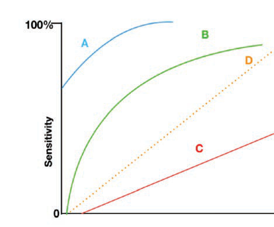<br><br><br><br><div class=''>a)   Ž      </div><div class='correct'>b)  ‚</div><div class=''>c)  -ç</div><div class=''>d) ç  </div><p><i> 79                       .    ...</i></p></div><div class='q'><p><b>Q32:</b>                  ?  †‰„     „,            ‰  „     „       ? Answer Key Question No. Correct Option 200 Detailed Explanations   ‘ƒ           ? </p><br><div class=''>a)   </div><div class=''>b) ê   Œ </div><div class=''>c) Ž   ‹</div><div class='correct'>d) ‘  š  </div><p><i>             .               ...</i></p></div><div class='q'><p><b>Q33:</b>                                ? 100 Answer Key Question No. Correct Option 101 Detailed Explanations                     ? </p><div class=''>a)     </div><div class='correct'>b)       </div><div class=''>c) ƒ  </div><div class=''>d) ”    </div><p><i> „                         . 11...</i></p></div><div class='q'><p><b>Q34:</b>                 ? </p><div class=''>a) ‘      </div><div class='correct'>b) ‘     </div><div class=''>c) Å Œ   </div><div class=''>d)     </div><p><i>          -    .  -    ,       ...</i></p></div><div class='q'><p><b>Q35:</b>    Å‘è-  ,                 ? 392 </p><div class=''>a) ê  </div><div class='correct'>b) ê  ˜˜</div><div class=''>c) ‘   </div><div class=''>d) ê </div><p><i>   Å‘è-  ,   ˜˜                  .     ...</i></p></div><div class='q'><p><b>Q36:</b>   ƒ    ’  …,    ….„           ç    ˆ•…•  ____ ( „  Œ    ): </p><div class='correct'>a) &;›•</div><div class=''>b) &;„••</div><div class=''>c) &;‡•</div><div class=''>d) &;„…•</div><p><i>  ƒ    ’  …,    ….„           ç    ˆ•…•  &...</i></p></div><div class='q'><p><b>Q37:</b>      Å       ç    ,        ç. ˆ•  Œ              ? </p><div class='correct'>a) ’ „</div><div class=''>b) ’ ˆ</div><div class=''>c) ’ …</div><div class=''>d) ’ †</div><p><i> 415     Å       ç    ,            ç. ˆ•  Œ...</i></p></div><div class='q'><p><b>Q38:</b>  “        ê‘.               š /     ? Answer Key Question No. Correct Option 393 394 Detailed Explanations </p><div class='correct'>a) ”ƒ† +  ‘ + ”  +  ‰„ˆ</div><div class=''>b)  ( )  š   </div><div class=''>c) ”   </div><div class=''>d)  .  </div><p><i>      , ”ƒ† +     ‘ + ”  +     ‰„ˆ          š...</i></p></div></div><div class='chapter'><h2>Water - I: Sources and purification of water</h2><div class='q'><p><b>Q26:</b>              ƒ- ? Answer Key Question No. Correct Option 48 Detailed Explanations           猌Œ,                       .           ?  98                             ?    „ „    ,  „           ‰  ‰ ‘‡%. ‹ „,                   .          …  ‰  ? 197  Å     ‰•,              ? 250  Å      „…  Å            Å  .     „Å     ƒ      ?                      ? 389  ç         „       ?  †                       ? </p><div class=''>a) ç ‡  ‡ </div><div class=''>b) •  </div><div class=''>c) ˆ        –</div><div class='correct'>d) ˆ     </div><p><i> ‹  ƒ-                  ,         ...</i></p></div><div class='q'><p><b>Q27:</b>    ”                  .           .         ™   Š  66  ?  „            –†%               .           ?     ‡‡‡‡,  „       ‡%. Ž  „      ‘%    ”‡%.     „ „ „    ?            ?      „Å     Å Å ?                 ‰   Ž -       ?   †--                -. ƒ                      ?                         ? </p><br><div class=''>a)     </div><div class='correct'>b) ˜  </div><div class=''>c) ç    </div><div class=''>d) Ž  </div><p><i>                     ,  ...</i></p></div><div class='q'><p><b>Q28:</b>     „         . “       .   Š              ?  „               …        . Å        .  Ž „       'ç'     ‡%. Ž            ‡.”‡   „  ‡.‘‡.      „ „ „    ?  Š     ,       . ƒ              .                ?  ‚         :           : 390  ƒ             ˆ  ‰  › ’    Å —? Answer Key Question No. Correct Option 463 Detailed Explanations                 ? 535 Answer Key Question No. Correct Option 536 Detailed Explanations </p><div class='correct'>a) ˆ  ç           ‡   </div><div class=''>b)              </div><div class=''>c) •        Ž  </div><div class=''>d) ‰         </div><p><i>    ,                  . “    ...</i></p></div></div><div class='chapter'><h2>Descriptive Statistics III - Measures of Disper...</h2><div class='q'><p><b>Q22:</b>           ?                        ? Answer Key Question No. Correct Option 32 Detailed Explanations  ’          „•--         †.          ?                 ?                     - ? 97  Å        ˆ        . ‰                       .           …      '  ?       ,        .         ?  Å   ‡‡     †Œ -‘      ” „      „. Ž    „     èŽ è       „.                 èŽ è?            Žè   ?                   ?        —              ? Answer Key Question No. Correct Option 272 Detailed Explanations  ‚ ™  › Å        „    „Å ?  …              „        …     ,            ‚ ‹ :   ƒê Œ          ƒ  ‰          .              š: 388  ”                . —   ,   ‚    -    ,   ƒ     ‹    .           ?  461  —    „      „                  . ƒ            ?                      ?     ‡          ?                            ? Answer Key Question No. Correct Option 560 Detailed Explanations             ?                ? 613 Answer Key Question No. Correct Option Detailed Explanations  ‹          . 630 Answer Key Question No. Correct Option Detailed Explanations     ƒ                         .                    ? 669            ?                   ‚  ?     ‹              ‹      –   .      ‹  ˆ   ?  823 ‘     Å       „ŠŠ        „Š‡       „Š. “        Å   ƒ‡   „ ‡? </p><div class=''>a) èƒ%</div><div class=''>b) ‡Š%</div><div class=''>c) ††.‹%</div><div class='correct'>d) †‡%</div><p><i> ‘  èé       è  é   “  . ‡ •       -...</i></p></div><div class='q'><p><b>Q23:</b>  ‡           ?                     ?            –  …ŒŒŒ           ’  .      ? 65  Å                  ‡†    -  ….  Å                …         .                   ,           .                   ? 153 Answer Key Question No. Correct Option Detailed Explanations  181                _____. Answer Key Question No. Correct Option 182 Detailed Explanations            ,    „           '  „   .        ?     …  Ž     ? Answer Key Question No. Correct Option 234 Detailed Explanations  249                    ç  .                  ê  ?   Å   Å    …  …        . ‚  „Å  Å      .     Å  ƒ?  †       ‚                ‚  ‚: 370                ‰  -Å    ê     ?                  …  ? 432 Answer Key Question No. Correct Option Detailed Explanations  ç           „    “ “  . ’     „  .       ‘——    ,        „     ?                    ç ?     ‡           ?              ? 572          _____ . Answer Key Question No. Correct Option 670 Detailed Explanations              :                Ž    Ž   ?               ? 792  ‘                    ‡– ‹   Å      „ Š “   .                „ŠŠ   Å      —     „ Š “ ? </p><div class=''>a) ‡</div><div class='correct'>b) ‡Š</div><div class=''>c) ††.‹</div><div class=''>d) †‡</div><p><i> †                ' ˆ        ...</i></p></div><div class='q'><p><b>Q24:</b>  ƒ               ˆ : 10                  ? 47            …ŒŒ,ŒŒŒ    -…ê    ‡%.          -…ê    (Œ.‡/…ŒŒ).        -…ê     ?  „           “†,†††   “†,††† -.           •† .    “††     “†   -   ‰   . Å      .  • ƒ           ‰              „    ‰  ‰  .              ‰   ‰ ? 196   ‹Ž--       -            …. ƒ       ç  .          . ‚   , …  ˜‡/’‡  .                     ?  ‚    „      „    .  „  …    …        ?      ‚           -  Å        . Answer Key Question No. Correct Option 371 Detailed Explanations               ç  ’   ƒ  Œ —   “  ?   è--    „   „             . ” “  , „                „ .  “-           . ƒ                           ?  519                    ( ‡)? Answer Key Question No. Correct Option 520 Detailed Explanations                    ? 534               ? Answer Key Question No. Correct Option 573 Detailed Explanations      ,    ‚                      : 747 Answer Key Question No. Correct Option Detailed Explanations  Œ  ƒ     Å‚       —.                 ‚  ? 772               è    ? 793 Answer Key Question No. Correct Option Detailed Explanations  ˆ      ,                  ? </p><br><br><div class=''>a) èƒ%</div><div class='correct'>b) †‡%</div><div class=''>c) ††%</div><div class=''>d) Ž‹.‡%</div><p><i>                      .       ...</i></p></div><div class='q'><p><b>Q25:</b>                    ? Answer Key Question No. Correct Option 11 Detailed Explanations                  ‚•”?      猌Œ,     ˜  猌        çŒ.        ˜    ?          è                ,             . ˆ    ,        ?          ‡‡      ‰-„    ‡‡          . Ž    „    ”‡            „    ‡         .        ?                    ?      „Å        ? 306          ˜ ‹          ’     ?    ‚  ,                  ™  ’  Å —? 462     ‡ –           ?           ‚   Å  ê  ( ê) Å ? Answer Key Question No. Correct Option 773 Detailed Explanations  ˆ    ,        ŠŠ. ˆ      Š, èƒ%         ? 824 Answer Key Question No. Correct Option Detailed Explanations </p><br><div class='correct'>a) „ƒŠ- Š</div><div class=''>b) „èŠ- ŽŠ</div><div class=''>c) „‹Š- ŒŠ</div><div class=''>d) „†Š- „Š</div><p><i> •   Œ                   . †     ...</i></p></div></div><div class='chapter'><h2>Tests of Significance</h2><div class='q'><p><b>Q21:</b>                ˆ      ?                                ?              ,        è       .            ?                    ?                ?               ”ˆ‚  ?                  ?                  ?              ›           –…Ž‚?   ˜- -            . ‰         ç   .     ?               -         ? 271              —,———? 305                        ƒ -   Š ç ˆ  ƒ-ƒ…ˆ.        326     ? Answer Key Question No. Correct Option Detailed Explanations 327  …     ‚   ‚            „  .    :               –  ƒ?                    ?  ç       ê           ,        ‡ .       ? Answer Key Question No. Correct Option 445 Detailed Explanations  Š       „        :     --      - ç-. ”             .          ?           ‡        ?                   ?                 ?                   ?                                 ˆ     . Ž ‚  ,             .              '  ?  †  ƒ     .     ,            ?   ‚–•     : Answer Key Question No. Correct Option 716 Detailed Explanations  746                  ?         ’   ,    Å                     ?                       ?  •           ƒè  /–. ˆ     „ŠŠ       ,               ƒè  /–?  -          ,       Å: 861 Answer Key Question No. Correct Option Detailed Explanations </p><br>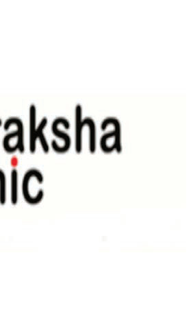<br><br><br><br><div class=''>a) “’</div><div class='correct'>b) ê</div><div class=''>c) —</div><div class=''>d) ’è</div><p><i>           ˆ  †   .      ˆ       ...</i></p></div></div><div class='chapter'><h2>Correlational and Predictive Techniques</h2><div class='q'><p><b>Q19:</b>                :          ƒ               ƒ   ƒ  ‚?  ’              †“.         ?               ? 64  „                             .      .          ,        ?                     ? 116 Answer Key Question No. Correct Option Detailed Explanations                       ?  Å                      —. ‚      .           …      —?  180 ”     .  Ž     „ „ „        ‰     ,          ?                        Å–-Žè   …Ž—‚?              .        ,            . “       ‚‰.                         ? 248  Œ                   :      „Å         Å   ?   '        ‹‹ /           • /.           ,         ?  †       ‚    ‚                  ‚  ‚?   „•- -          . –             ,        Œ       Œ    ƒê Œ     ?           …      ‡   è  è  (‚ Ž-‚ ‚ )    ‘ ? 431 d)                      ?  Å            . Å                -   “: 460       ’ ,               ƒ       ?      .                  ?            ‹             .                 ?               ?            ? 599 Answer Key Question No. Correct Option Detailed Explanations                   ?  ‹      :                ? Answer Key Question No. Correct Option 646 Detailed Explanations                     ? Answer Key Question No. Correct Option 658 Detailed Explanations                     :  ‡ ‰ˆ                     ˆ .           ?          ?       ç  Š    …   ê   ‹  ç ?  ‘   è      ,                     ?  –       Å        Å   Å  :               . 791                 ?                         Å   Å   . ƒ   ,           ,    . †   Å     + „.                 Å  Å     ?      „           ? 872 </p><br>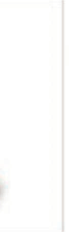<br>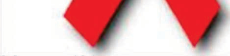<br><br><br><br><br><br><div class=''>a) “  </div><div class='correct'>b)   </div><div class=''>c)   </div><div class=''>d) „     </div><p><i> 24                     .  –, ƒ  ‡     ...</i></p></div><div class='q'><p><b>Q20:</b>  ‚ ˆ ‘   “        : 9                  ƒ        ‚? 31                 ? 46         ‡ŒŒ            .         ‡Œ,ŒŒŒ.         ?               ?  ‚        : Answer Key Question No. Correct Option 139 Detailed Explanations  152 ˆ                             ?  • -ê  -                ?         …    „ „ „   ? 195                  êÅ– Žè? 233                . ƒ       ‹ç .                ˆ  ?   ‡‡- -        -   ,  ,        . ’                       -            .             . Œ      ,               ?  •                :                        ?  †       ‚                    …    ‘   ? 369            ƒêÅ   ?           ,                ?  ƒ     ‹        ,                        .                                .    444         ?                    . ƒ                  ?                          ? 506 Answer Key Question No. Correct Option Detailed Explanations  518      „•          ‚“‚“?  533           ˆ– ?                ? 559              : 571  ‹ Š            ?                         ? 629           . 668        ‰           ˆ ? 682 Answer Key Question No. Correct Option Detailed Explanations  ‚            ‰Œ‹‡•  ? 715                   ç  Š  ? Answer Key Question No. Correct Option 731 Detailed Explanations                      ?               Å     ’   Š    ŠÅ   (Š ’)      ? 771       ‹,    ‹             .          ?                    ?      -           Å  ˆ  ˆ   ,          Å    ?                      –—        .            ? Answer Key Question No. Correct Option 873 Detailed Explanations </p><br><br><br><div class=''>a) “    </div><div class='correct'>b) è - Š </div><div class=''>c)    </div><div class=''>d) ‘–—</div><p><i> “   ‚               . ù       ...</i></p></div></div><div class='chapter'><h2>Facets of Clinical Research and Biostatistics</h2><div class='q'><p><b>Q16:</b>         “  ‡  ƒ   ‹? 8                      ƒ (Š„‚)? 30                       ? 45        ……Œ     , –Œ      .            , çç       .    „ ?             ?  „                             -    .            ?  115 Å -                       .              ?  ”         ,              (Š‚).           ?  Å      +   .               ? 151  ƒ          „  „       ()        ?      Ž ‚                  .          ?  Å       ‰     : 194      ƒ Å   Å „  Å ƒ” „ ? 220  ˜      Žè   . ˜          (™–š— “Š/’Š /ˆ /ç“Š)         “ . ™       †Å              ?  Š  ,            .             ?            ,                        ?         š ?      „Å         ‚ ?              —  .                 ?  „                              . ˜ ˆ  ,            .       ˆ       ˜?  ‰              -”,               Å             ? 353  †       ‚               ˆ     Å               ?           ê  Å       ?           Š Š? Answer Key Question No. Correct Option 422 Detailed Explanations  ’            ,        Œ“  . ”    Š               •        Œ“.             ?                     ? 443  Š        ,               “:               ’   ? 478 Answer Key Question No. Correct Option Detailed Explanations         “     ? Answer Key Question No. Correct Option 489 Detailed Explanations   Œ- -                   .          Šç   ? 505                   ‹ . 517  532  ‡     ,                -ƒ  ? a) b)               ? 558               ?              ?                 ?        . 627                 .                  ?                  ? 657  Å       ,                             ? 667            †  ƒ      ê”–’? 681              Ž   ? Answer Key Question No. Correct Option Detailed Explanations  Œ            -   † : 714  ç            ,              “†‡ ?  ‡        ( )     :                 ? 770  „     .         ˆ      †.    ? a) 810  •            . •              „Š.è /–       /–    . —      ‡%              ?                                     ?                               .                   ?           . 887 </p><br><br>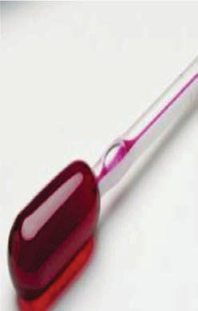<br><br><br>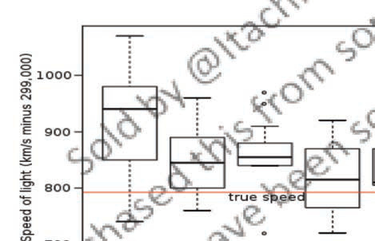<br><br><br><div class=''>a) „ ’ ‡  </div><div class=''>b)      </div><div class='correct'>c) Š‡- -    </div><div class=''>d) ‹’  </div><p><i> Å            “  ‡  ƒ   ‹. ‡  Å      –‰   ...</i></p></div><div class='q'><p><b>Q17:</b>             ˆ      .                       ?                 ?        –  ,        ˆ-…—   . ‰  , ’      .      „ ?              ? 85 Answer Key Question No. Correct Option Detailed Explanations                  ?                ?  ‚     ‡ˆˆ         ƒ.          ’ˆ%. ”         , ‰’       .       ?             …         ,    „   ?  ”          . ”    ‹  „         . ƒ       ‹ „  ? 167 Answer Key Question No. Correct Option Detailed Explanations                     ?  ‡‡‡           . †  ‡‡  , ‡  „,       , ‡‡‡   „.        ?  Ž    –ƒ      ƒ  „ „    ?  232 „  …Ž—‚,        Žè              ‰     ?                 .                            ?                     ?          š ?  ‹--   Å „   . ˆ Å,  Å            ƒ   . š         Å.       ? 304   ”-  -             Œ       .        —       ‘   ? 325  „ †- -     ˆ        „  .       „         ?                       Å     ?  †     ‚   ‚                     (Å )         Å ?   ˆ•-               .               .                       Œ          ?            …     ‘   ‘ (‚ ‚ )?                          — ?  Š     ,    … „      . ”   ,  „„  „ .       ,         .             .             è      . ê Šç       ‘Œ.     ‰     ‡'  ,      ?                        ˆ ,         ?             ?            ?          †               ? 570               ?                        Š?                       ?               ?         Œ       ‚ .          ,          ,  ,       .     ƒ  ?                  ˆ ?  Œ                    ‡    .             „?                         .     ˆ   ?  745         Å        ?      ‚     ƒ       ?             .  „ ()   „ ƒ( )      ‚‚               . “‚    ,         ? Answer Key Question No. Correct Option 811 Detailed Explanations  ‘ Å      (ç˜)       „„--       ŒŠŠ /        Š / .        ç˜         ƒŠ /   ŒŒŠ /   ?               Å                  Å . •      “èè                     Å    Å .              ?            ˜ -•     ?    ”‡ ’ •     ? </p><br><br><br><div class='correct'>a) – </div><div class=''>b)  †   </div><div class=''>c) ”   </div><div class=''>d) </div><p><i> ç ê       ˆ      . ‡              ...</i></p></div><div class='q'><p><b>Q18:</b>   Š‰,             ƒ   Ž.     ?                      ƒ (‚)?            ?                           ?  „ -        …††       ”††  .        ”††  …†   . Å      . 96  ‘       , ,    (’Ň)        ?  ‚ ‰“- -           Š‚Š-Å-‰. –    , ˆ                       .    138         ç  ?  Å          „           ,         ‹ . Œ          .                   ?                      ?       „   ,          ‰ ‰       „   ?  ‰     ƒ    ‚  ƒ  ‚  Å ƒ” „ ƒ? Answer Key Question No. Correct Option 221 Detailed Explanations                   -        ?   Ž--     ‹Ž           çˆ           ˆ  . ƒ             . ‚   ,           .         ?  270         ”‰-                  ?  ™               ? 283 Answer Key Question No. Correct Option 284 Detailed Explanations  ‰--  „  Å   „  Å …. ‚         „    „Å Å?               ?          › -   ? 341 Answer Key Question No. Correct Option Detailed Explanations  ‰       Å    Å    ,                  ? Answer Key Question No. Correct Option 354 Detailed Explanations                         . 368   Å   ƒ  ƒ Œ —  Œ               ? 387  è     (èè‘)          __________                    ?  ƒ              „  „•  ?          ‡     Šç    .   ƒ            .          '   ' Šç  ?           —  ?                 ?  ’                   Å‚‚ /  ?                    ?  Å                  ”-    ‰ „ ‰ ‰.                     ?                    ? 612                    Œ         ? 628                           ? 645  „     ‰         ,         .                  ?                        ?                       ?                    ?              ‰  Œ     ‚•Å–? 730  ‡                       ?           ƒ   Å ?  †              ƒŠŽ  ƒŠŽŠ    .         ? 790  822 ‘            ?   ,     Å        Å  Å         .        Å          ? 860                 ?  Ž    ‡-    ,      : 888 Answer Key Question No. Correct Option 889 Detailed Explanations </p><br><div class='correct'>a)  & ;  & ; </div><div class=''>b)  & ;  & ; </div><div class=''>c)  =  = </div><div class=''>d)     </div><p><i> ç  ç           ƒ   Ž. ù ˜:    ƒ   ’    ...</i></p></div></div><div class='chapter'><h2>Mental Health</h2><div class='q'><p><b>Q15:</b>  ‚             :  …   ,                    ?                    ?                ”   ? 63                   ?               ?               ?                 ? 126 Answer Key Question No. Correct Option Detailed Explanations                                    _______.  Å               . Å                   ?  ”        Å     „    ‡ .        , ‹      . †       „   ,     ? 166  179            -   ?  ‡‡‡               'ç'    (‰). Ž    „    ‘‡       ‡‡        .      „    ?       , ‚  Å  Å ‚    ƒ  Å   Å ‚ Å ƒ?              Žè                 ê ?  “            '”'. ƒ            .                        ? 247                           ?            -  -    ? 282     „Å ‚  „      :                           ?  ™    „       Š- -         .            ? 340            ,             ƒ     ƒ.          Å                     ?  †       ‚             Å         ?  386              Ž   ƒ Œ “  .                    ?  Ž ƒ   Š         …                 .            ?                       ? 430          ê    “       ?  ƒ                 ? 459           '  '   ?   è‡--       •–      -. ’          è-‡     .      “                  ’•  ?             :                                    ?  ‹        ,        ‡                     .                   ?           -          ? Answer Key Question No. Correct Option 550 Detailed Explanations                      ?                    : 569                   ? 598                   ?                  Œ      ?                ?           Œ   -   ?                     ?                …  ‡ ?  ƒ          . †             . ’…                ? 694            „ —    ˜ †     ? Answer Key Question No. Correct Option 705 Detailed Explanations  ‹ ‚  Œ       …        .          ?         , ,             ?           -   Å  ?          ‚•   ‘?             ? 789  Š         ‚    ‚‚  .       ‚        ‡† Å ,    ‡ê Å     ‡è Å .  ‚      ?  ‘          (ˆ…)  „ŠŠ          . ˆ     ŒŠ   “      (ê)  „   “ . †‹.‡%        ˆ…     ?                                 . ‘   , ‹  Å  „     (‹„)   . ƒ            Å Å      Å        Å Å .             Å        ? 859    ,              + ■ ■ + ■ ■ + ■ ■,   ■        , ■     ,   ■        .        ? 871                        .              . Œ           è%      . ê                     ?                Œ…‹    Š      ? Answer Key 899 Question No. Correct Option Detailed Explanations </p><br>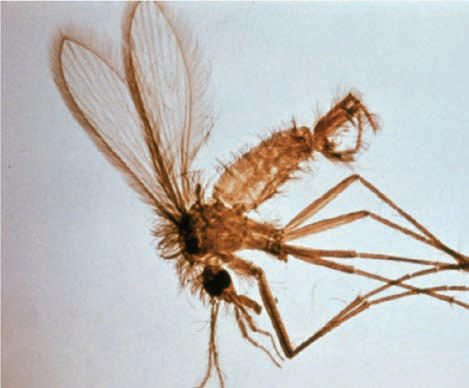<br>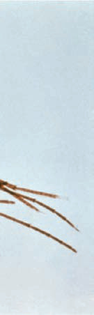<br><br><br><br><div class='correct'>a) Œ    %    </div><div class=''>b) …            </div><div class=''>c) ‹       ,        </div><div class=''>d)           </div><p><i>            : • ‘ † -           • Å  ‘...</i></p></div></div><div class='chapter'><h2>Genetics and Health</h2><div class='q'><p><b>Q1:</b>                :                    ?                        ?                        ?                           .            ?                                     .                 ?                   ?                     ?                           ?              ?              .                         ?             ?                    ?                     ?                   ?              ?                  .                         .                .                 ?                   ?        ?                     -  .                  ?                      ?               .                              ?              :   --                  .                        .                       ?              ?             ?                   ?                      .                             ? a) b) c) d)                     ?            .             ?                       ?             ?                          ?                         ?                            ?                    ?                          .        ?               ?                   ?          :               ?     ,  ,        .                  ?                   ?             ?                ?              .                  ?         ?            ?             -            ?                       ?                   ()    -   ?           ’        ?                          .            ?               ?                 ?                ?                 :                      ,  ?                 ?                             .               ?                 ?               ?   --                     .                  ? </p><br><br><br><br><br>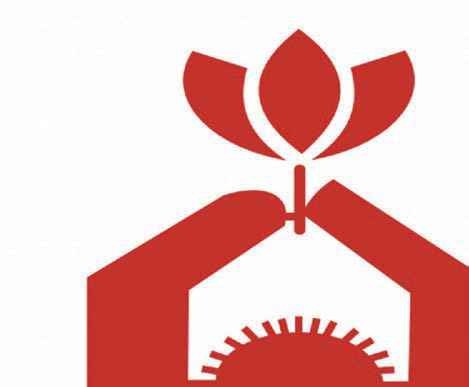<br><br><br><br>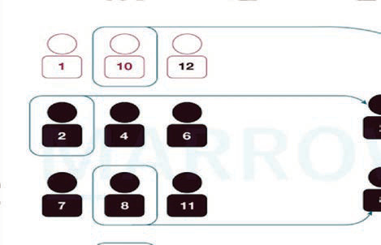<br><br>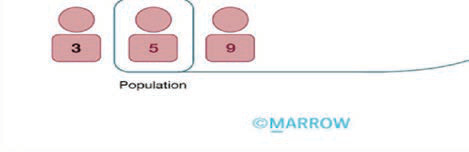<br><div class=''>a) </div><div class=''>b) </div><div class=''>c) </div><div class='correct'>d) </div><p><i>                 .         ...</i></p></div><div class='q'><p><b>Q2:</b>           ’          ?                    ?               ?                            .                      .        ()    ?                          -               .       Å  ?              ?             ,           .         ?              -  ?                    ?                  ?  ƒ        „  …     ?                 :               .          ?    Å  Å ‚      ƒ    Å Å  ?               ?              .                     ?                 .               ?             ?                -  ,  ,               .                    .                   ? 291                 Å  ?   Å ‚ƒ„…    :                           ?  ‚   ƒ                             . „     .  Å    ‚     : 363                         .     Å     ‚   ƒ ,               ?                    ?         ,                  .                     ?                        :  Å        ‚ .              -       . ƒ            „   ?  Å    ‚ ƒ     ƒ ƒ  :                ?                ?                      ?                      ?     ,                          .                        ?                ?                   ?                 ?               -?             ?                ?                            ?                ?                 ?           :               ?                     :            ?                ?                             ?                 ?         Å.    ‚   ,  ƒ               „      ?    ‚  ƒ  ‚ ?               ?               :          ?               ?                ?                ?            -     ?                 ?                        .        .                   ?           '           --  ? </p><div class=''>a)  ÅÅÅ</div><div class='correct'>b)  Å</div><div class=''>c)  ‚ÅÅÅ</div><div class=''>d)  ÅÅ</div><p><i>          '          .       ‰ŠŠ ˜.. ...</i></p></div><div class='q'><p><b>Q3:</b>  ƒ             ƒ„…†‡ ˆ :               ?                         .                      .                          .            -        .             .                 ()    ?                 ?               : 92                    ?      ,                              .      ?  134                 ?                  ( )?  ƒ …         ?                        ? 175  190             ,       ?   - -      ƒ ‚   Å Å„   .     Å     ‚  Å       ƒˆ  ‚  ‚.         ƒ? 216  Å                      :  Å          ?             :                ?                     ?     „… „ † -ƒ    ƒ   ƒ   „    „Å       ?                        (…ˆ)?  „   …  †‡†‡ ‚ ,                      ?  348         ƒ    ƒ                       ?  Å       ‚         ‚    ‚       ‚  ?        ‰      „Š--          ‚  .       ‹   ‚                     ‚           Œ.            ? 383                    ?       ,      Å %            ,   %      .             ?  ƒ               ,              . „        .            ?  ƒ             ?           ‚               ?  485                 -    .            Å     ‚ -     . ƒ                 ?          ‡        ‡      ?       :            ?                    ? c)  Å            -              .                            ?                          :            ?                   ?               .                  ?                  ?           ,   ,        .            ? 638             -  ?                          ?                    ?       ‚,                 .                         ?  †             . †    ‡          ,      ˆ, ‡:               ?                           .                    ?                :  Š   „ „           . ‚               ‹,           ,    ‚   ?             ‡ˆ‡‰?              ? (       )           ,                 .               ?                       ?          ____   ?       ÅÅ         ‚    ƒ    .       „ ƒ        ….           .        ?     ?               ?                    ,             . .             .  881                ?                             ?                 ? </p><br><div class=''>a) ƒ   </div><div class=''>b) „   </div><div class=''>c) …’   </div><div class='correct'>d) †     </div><p><i>  ‚   ƒ„…†‡             ƒ , „ ,  Œ  , … , †...</i></p></div><div class='q'><p><b>Q4:</b>  †  ‡           : 5  …       †                       .             ? 27                     ? 42  60            ?              ? 81  „            …††            ‡††        . ˆ    ‰         .         ?  Å        -                 .          ? 112                 ? 123                 ?                  ? 148  ˆ              †  ,           . ƒ       „   „      ? 162   …†                 .           ? 176         ,        „ „„    …?    Å  Å ‚      Å   Å  ˆ ?  „  …,                     ? 228            „          …    .       ,              ? 244                    ? 266  †               . †                    : 279  „               ‚:     ˆ ÅÅ  , „    „Å -         Å ? 300  321                       .                       ?                          ? 337                    Å   ?  …  ‚        „   ‚      . „                             . …      ,            . †          ‚ ? 364       - -   ,      ‚ ,    ê‘.                    ?                        ,      ÅÅ  Å . ‚     ƒ   .                  ƒ ? 418       ? 427                    ? 440  ƒ            Š      ? 456  …             --   .              ? 475               …-   ÅÅ?        ‹       ,                    ? 496  '      '                 ? 502             ? 514           ? 529  †     ,            .                               546  ?                        . …      ,                    .                   : 555                  : 566                  ? 582                 ? 595                       ? 608                . 623       ƒ              .            ? 639              -  ? 654   ƒ    -         ,                  ? 664                  ? 678  ƒ             .              ? 691  ˆ      ˆ ŒçŽè,    ‡                ? 702                ? 711                       ? 726                ‚ ? 742               -   ? 756       Š‚   ‚? 766                    ? 786               ? 806           Å         .    ‚  ƒ.            ? 818  ‚     ,                  .                 ? 834                        .      ? 842                 -? 849  ƒ              : 856                   ? 867               ‚         ‚  ?  ‚                        : 896                  ? 906 </p><br><br><br><br><br><br><br><br><div class=''>a) ‡           </div><div class=''>b) ˆ‰   </div><div class=''>c) …            </div><div class='correct'>d) Š            </div><p><i> †  ‡         . ‡ è .   –      : • †...</i></p></div><div class='q'><p><b>Q5:</b>          ˆ           Ž      .              ?                           ƒ                        ?                       ?              ?   ‡   ˆ           ˆ                ‰ˆ-‚Š.          ?  „ -                                .                   ?        ,                  …       ?                  Å     ?       †       ?                            ?  ƒ            -     ?                    ?         …    „   ? 191    Å  Å ‚     ƒ ƒ  ˆ? 217  „  …,  ‡- -                          :   †‡--                 †ˆ     . ‰             . ‚    ,            .                   ?            Å,‚‚,‚‚‚,    ƒ‚,‚‚‚        .    , Å‚‚        .           ?    ƒ       ‹    ‰      -    .         ?                    ?   -  „  Å-… ƒ  „  „  Å     . . ˆ ƒ,   „Å  Å   .      „Å     †  Å   „ ?   èê-  -                  .    /ˆç         ?  „ Š‡- -                         .                     ?               Œƒ   Š    ƒ   ?  …  ‚  , ‚         -   ,  ‚         ,  ,              ‚       ‚. †      -     ?   ‡- -              ‚  .     Å        ƒ ,           ?                        ?          „       ?  ƒ         „         .      ?  ƒ           „      ?       ‚    -‚     „ --      ?             Œ--  ÅÅ   ?       ‹,       猰  Œƒ        Ž ‹    ÅŒ° .  ‡       ?                      ?       :              ?                      .                ?               ?                              ?                                           ?              ?      ,                       Å‚,‚‚‚ :  ƒ„--           ,  ,  ,        . …           .                   ? 624                       ?            ‚   ?                   ?                    ?  ƒ                   . ‚ …   ,              .         …      …  ?             ˆ?               ?                 ?               ‚ ?                       ()?          Š  ‡ˆ‡‰?       ‡    ˆ   ,           ‡   ?                      ‚        ?               ?  „…                       ƒ    ?           :     ‚                    ƒ „ '                  &; ….……Å. ƒ ,             .            ?         -             ,  :                                                   †     . ‡           -.‚. ˆ         :                        . „   , …               .          ?  Å                 ˆ     ?   ‹--                 ŒŠŠŠ. ˆ              .            ? </p><br><br>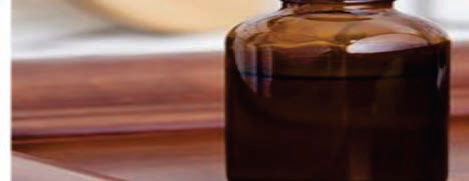<br><br><br><br><br><br><br><br><div class='correct'>a) -    </div><div class=''>b)    </div><div class=''>c) -    </div><div class=''>d)    </div><p><i>           ƒ .  ˆ           Ž    ...</i></p></div><div class='q'><p><b>Q6:</b>              –       ?              ,        †              .                  ?          ,                   ?             ,             ?            ?  „ -                         ‰       Œ     .                ? 93  Å                                  .                  ?     ,      …†-‡†          ˆ.  ˆ,     …‰    .    :                        ?               ?  ƒ          „     „-Ž   ?  Š       ‹         .                ?         …    „   ?  Œ „   „     Å     ‚  Å  Å ‚ „ƒ ?  „  - - --                   , ,  ,    . ‹   ,     ˆ‡/ ,         .          ?  Œ              ?                   …   †           ?   ç--          . Œ  ,             .                  ?  „ †‡- -            . „               ‚: 292      „Å   Å Å     Å  ?               ,       .             ?                     ?         -    Å ƒ  ? 349  … ‰ , ‚    … „…-     Š,      ‚       ‚  ?   - -       ê‘      Žè   .                         Žè           .                  ?               ,             …         .                   ?                 ?           -    -    ?  ç  Ž   Ž ˆ        „           . Š         ,       ?  …   -                   ‚    ?           Å   Å              ‰   - ‰      : 486                ‹   ‰ ?              ?  ‡  ˆ      ˆ   ,    ‰           :               ‡   ?                        ?                      † ?               ?                  ?  ˆ         ‰        ‰ .              ?            ?        , ,   -     . ‰       Š‹    .               '  ?                       ? 640               ?               ?                   -   ?               ?     ‡            ,       ˆ ŒçŽè?                ?                 ?  ‡                 :              -     (  --)? c)      Ž      ?                .     ,               & ; ‚‰‰  ‰.‚‰           ‚‰‰- ŠŠŠ  ‰. ‰.                  & ; ‹ ?                   ‚         ‚        ?       ‰         -    „Š         .                  . ‹Œ,Œ‡‡.          ?                 :?                          . Œ        ‡†.    ‰          ,         ?                              .                 ?           Å   -    ?        ‹      ,                       + .Œ   - . .          ?            †      ? 882                       ?       †               .                   ? 907 </p><br><div class=''>a) Š          ç    </div><div class='correct'>b) Š        </div><div class=''>c) Ž             </div><div class=''>d) Š          </div><p><i>  †            .    .         ...</i></p></div><div class='q'><p><b>Q7:</b>     … –       ?  ˆ             ‰‚       .                     ?                 ?  ‰           -      ?                   ?                -    ?             …      ?           Š      . ‹                   ?  135 Š                          ?           …   ?  ƒ           „   „ ? 163                          ?         …         ?    ‚ Å„   ‚   ƒ  ƒ ‰…. Å  ‚     ‚   „. …ƒ  ‚             ?  „              ç‰  .                  ?               ?   ‡‡- -                      ‡ˆ   . ‰   ,       ,   ,    . , Š‹Œ,  ‹Œ    .              .        ? 267      ƒ         .          -    ’    .         ? 280             ?  301      ƒ   , „ „      ƒ   ?   èê-  -     Œ                 .            ? 322  „     -                             .                ?  ‚ ƒ    (‰)   ( ) ÅÅ   Å   Å        ƒ.               ?  365 Å              ŒÅ (‚       ,   ,    ). Å        :               ‚      ? 384             ƒ   .                           ƒ ?              ?                   Žè   ?  ƒ                     ?          ƒ     ‚ ?  ƒ          ç            :       ‹, ‹      .  ,          ‹      .            ‡  ‡  ?                    ,  ,                  ,   ,       ?                      ?             ?                            ?                         ?                   ?                 ?  Å ‰         .            ‰ ?  ‡               :                  ?                ?              ?            ‰-           ˆ- -  .        ?      ‚     .             ƒ       ?             …   .             ?  ˆ     ˆ ŒçŽè,                :  ‚          …   ?  ç                       ?                ?           …,.         ()    „? b)                 ?               ‰% .                     ?  Š             ‚ .   ‡‡  ,     ˆ. ‹ ,      ˆ. ‹       ˆ. ‹ .      ˆ. ‚       ?  ç             „Š.              ?  ‰                 . ˆ        „Š  ‹ƒ Œ         Œ . Œ  …            ? a)            :                   ˆ‰,     -     ….…Š‹.    ,       ?   -       Å                ?                 .Ž (- = . )      è‰                     .                      ?                   ?  ‚ --                 .             ‡  '   '         .      ?          ˆ  è  ê‘? </p><br><br><br>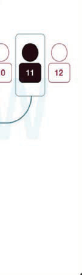<br>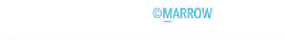<br><div class=''>a) ’     ç   </div><div class=''>b) ’       ç     </div><div class='correct'>c) ’    ç           ƒ</div><div class=''>d) ’                    </div><p><i>  … -           è .  è         ...</i></p></div><div class='q'><p><b>Q8:</b>                            : 6                ? 28                       ? 43  61           „           .                .               ?  ˆ                 . 82             ?   …           Å '        .             ? 113                                .   ,         124   .          ?           -       ?                        …    ? 149  ƒ        -  - è   ?  †               .       ? 177    ‰       .        ‰ ?    Å  Å ‚     ƒ ƒ   ? 218                     Žè   ? 229  245      ç                .        ,           .           ?   „è- -       ÅÅ               .        ?  ■Ž--          ƒ .         ƒ?                     ?       … ’ „   Å       „  - .     „Å  ?                 ?  338                     ê       ?  ‚        è (‰)   ( )  Å      Å         .             è ? 350  …     ‘              ç’ç’. †       ‚   ‚             ?  “                              .                         ?                  … ? 419  428 ‰          ,     Š            .                     Å   ? b) c)  ƒ      Žè      ê               ? 441  457 ƒ              Š?               Œ  ? 476                      ?   Œ‚-‹ -       ‹             …  . ‘ ‹    ‡          ‡     497   … ‹ .            .              ?       . 503  è   ç                    .                   -    ? 515                 ? 530  547 †                   „‚‚  .            -     ?  †               ,                 . Œ                       ? 556          †                ? 567  ˆ     ,  …            .                   ? 583               ? 596  ‡                .              ? 609   Œ        Å      Œ      .                   ?                            ? 641               ? 655  …        : 665         …,             .                ? 679  692 Œ                ?               '     ˆ? 703               ? 712                ? 727                   ‚? 743            „      .‹-ˆ Å? 757      ç   ’       ? 767  787 †  ‚‰              .  ‰    ‰   .    , ƒ‰   ‰  è   .                 è   ?  807 Š     ‚          ç.      ‚     ‡      .      ‚‚‚           ?  …               ,         .        ? 819  ˆ  ç…   (†Žè)        …        . ˆ        .        835     .    .     …. Œ  …        ç     †Žè   .   .  ? c) d)         ÅÅ      Œ  Å %       .            ? 843 c)                    ? 850  ƒ             Å      ,      Å     : 857  868      ,                            ?    ,      ,          .          ?                      ? 897    ˆ -     ? </p><br><div class='correct'>a) ê     </div><div class=''>b) ‡   </div><div class=''>c) “    </div><div class=''>d)     </div><p><i>        .           .      ...</i></p></div><div class='q'><p><b>Q9:</b>             ?  …            ,         Œ      .              ?        ,             ?        ______.                     Ž    Œ        .         Ž .     Å  ?                 ˆ   ?  Å                                    .                  ?                     ?                     ?            ?  ƒ           Ž            „ ?  Ž   -       :         ‰   ‰          .     „,         .        „,   „     … „ „   . ‹         „  ? 192  …ƒ        ƒ,  - - - Å--    ‚  „   Å   .        ƒ   ƒ    Å ‚ Å  ,     ?  „ çˆ--           ‘  .’ ‚‚Å (Š     )   . „ “ç  ,              .            ?                 ?                     Ž ? 268   ˆ--             ƒ  Å ‡Š‰Ž.          (  ‡Š‰”)      . „        .       ?  „         ‰  ,     ,   ,     . Å          . Å        †Š  .               ?        … ’ „   Å      „  .   …     -ƒ    ƒ.      „Å „     ?   ê -  -  ,            ,           èè/“” .           ’         -‹ •?  ‘ Œ‚    ‚         ’   †“.‰‰  .            Œ‚?       Å                                        ?  …    ç’ç’, ‚       ‚    “       ?                Å        ?                      Š     ?  ‰  Œ-,       … ?       Žè                  ?  Š   ,    …  „      †  . Ž      , …            . ƒ        ?  …   ƒ    Œ-     .         ƒ     ?               ‡--   ?   †‚-‹ -    ‡         ‹   ‹ ,  ,       .   ‡       ‡              ‹        .      ‹  ‡      ? Answer Key Question No. Correct Option Detailed Explanations 498                  ?           ,    †“            .                   -         ?  ˆ              ?  †      †        .     ,                    .                      ?                     .                       :                   :                   ?                        ?           -        ?  625                 .                    ?   ‰Š--          . ‹…            . ‡            .              ? 642              ?  ‹ÅŒ-            . ‹       -ƒ       ?  ˆ        ,                 ?             Ž     …        ?                         ˆ?              ?                    ?                  ‚?                      () ƒ  _____.        Å   ‚  ?  †          ê            ‰.ƒç.         ,                 ?          ,          ‚  ‡       ‡‰.ˆ ‹ . Ž,                    ˆ. ‹    ˆ ‹ .          ‚?                   ?                  ê  ?               ‰:  Œ                    ''           ' ',          .         ,            .   ,        .          „ ?                    .            Žè    .   '   ,          .                              ?  ‡                 .         ?  „     ,          .          ? 883                  „ ?  ’ ˆ -                    ? </p><br><br><br>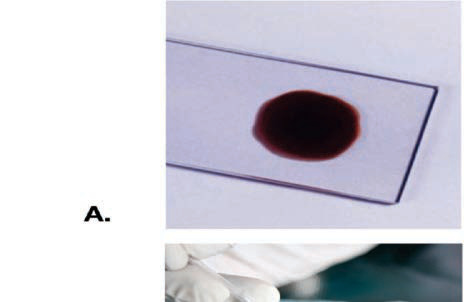<br><br><br><br><br><br><br><br><br><br><br><br><br><br><div class=''>a) …  </div><div class=''>b) ”     </div><div class='correct'>c) „   </div><div class=''>d) è  </div><p><i>           . ‡      †  . Œ: †         ...</i></p></div><div class='q'><p><b>Q10:</b>                  ?                  ,  Œ ,           ?              Ž,               è     .               ?           ‡Œ,ŒŒŒ  . 猌         Ž,    èç .        ?                              ,        .                  .     Å  ? 83  „                        .                          ? 94           …           ?                      ?  ‚                   .                      .              ? 136                       ?  ƒ             „           „ ? 164                  ? 178          „             ‰    .     ‰       .     ‰      ‰ ‰?    ‚   ƒ  ƒ ‚   Å Å„ ,    . ‘ƒ      ‚   .         Å   Å   ?                            ? 230                      ?         Ž          ?           ?            ‹  ? 293      „Å -   „    ƒŽ    ƒ? 302        †    è‹/“ .    ,        †      ” /“• . †                           .        ?  ‘        ’Š        Š‡ .     Œ‚.  ‰      ç     ê   „  ,       ƒ        Å   ? 351  ”            Š …‹  . †       ‚          ? 366            Å          ‘  ‘ ,  , ‘         ƒŒ?                       …   ? 420       , ,          ?                ?   „„       . ‘       ’      „„? b)                   ?  Ž        ,         Å     Å   ‰--   ? 487                    ’     ?                   ‘     -   ?  Œ            ‡           .           ,                  . Œ                 è:        ,               .              ? 548                  ?                 ?                  ?              ?  ‹    Š  Š         .       ,        Š      -     . ‹             ˆ‡        .          ?  --        Žèç           „  . ‹   ‚              ê‘  .              ?               ?                 ,       ƒ  ?                         ?  Š           ‹Å. Š            Œ       Å            .      ?  †    ê-              .                ?  Å    ˆ,             ?               ‡‚ˆ?            ‹-    ?                        ?  Š                (). ç        †,.    Å     ?   Å    ‘è        ’  Å  ,    ‚ ƒ   Å        ‚      Å  .                Å  ?               ?                     ‚          ?  ˆ   ,                 ? 820  ”  …        …  ,         . /“         . /“.    ê               . /“?               „†       . Ž         .       ?               _____       ,               Å ˆè%     êè%  .     Å          ?                          .            ? 869    , ‰                     .          ?           ˆ   Š      Å   ê‘?  …    . </p><br><br><div class=''>a) - , -, ‚-, -</div><div class='correct'>b) -, - , ‚-, -</div><div class=''>c) -, -, ‚- , -</div><div class=''>d) -, -, ‚-, -</div><p><i> ‡  , ‚                    . ê   ˜   ...</i></p></div><div class='q'><p><b>Q11:</b>                   ?              ,     †      -              .             ?             ?       猌Œ  ,  „      ’ŒŒ    çŒ  .        ? 62         Å          ?  „                         ,             .     :               …  ?       ,          .  Š   ,                 ê   ˆ.             ?  ‚               ‹   .                    ?                           ?  ƒ  ‹       ‡ ,                  -        . ƒ     ‹          è                ?  ‚                  :  Ž „      ‰ „         ‰    „ ‰  . Ž  ‰ „   ‰  „      ‡..         ?    Å  Å ‚     ƒ    Å    Å   ?  Ž           ?             . ƒ                            .            ,      ,   '   ? 246                         ?       …     ,                  • ƒ     ? 281  ‘ -„         ‚:   --  „  Å      ‚˜.     Å, , Å „,  „Å .    ƒ   Å?       ‹             ? 323  —         ,                ? 339        ƒ                    Š       ?  ”  ‚       „ ‚        ‚ Å. †  ‚                 „  ‘ ?                ê  ‘     ( ê‘ )? 385              ƒ  ,                     ƒ .                ?           ? 429  ’        Žˆè     .                       ?  ƒ     „     „       „          „ ? 458  ’      ƒ           “.             ?  ’          “    Å  ?                -      ?             ‘ ’  .                  è        ?           ‹     Œƒƒ      Œ, ƒ,   ç    ’        ?  ‡             ?                 ?                    ,        . Å           ,        ? a) c)  Å     ‰                       . Ž   ,        .                      è?  ‡           †                Š    .              Š?                  .  Œ                  .                 ? 643          „?  †  ƒ       ‹… -       .     …ç     ,                 ?            ?  Œ                     .      ? 693           ?    , †,               Š     .            ?  728                    .    ˆ   ?          -          ?  Š                  -       (-).    ‚   ,                  ’   ? 758 Answer Key Question No. Correct Option Detailed Explanations               ? 768                  ? 788   ‹     ‚  è    ‚   ‚          .   ‚‹  ˆ   ,     ,        ? 808  ê          ,           „Œ.‡ %    .                   „Œ.‡ %?  ˆ    „Š        ƒ   ‹ …  . ˆ      ‡ Œ         Œ .          ? 836 Answer Key Question No. Correct Option Detailed Explanations                       ‰      :                        ,           ''         ' '. †           ….…Ž.       ? 851                     Å  . ƒ        ’è Å  “è    “ˆè ± “‡   ’è       “‡Ž ± ” . ƒ                ,       ? 858                ?         . 884                ‹      Å ?  908             -            .                ? </p>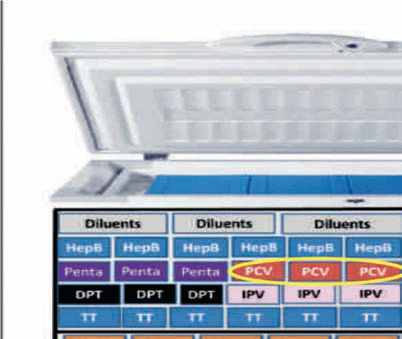<br>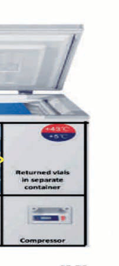<br><br><br>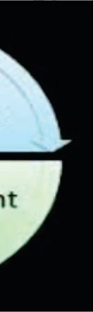<br>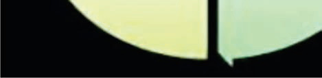<br><br><br><div class=''>a) „      </div><div class=''>b)    </div><div class=''>c) ê    </div><div class='correct'>d) ê      </div><p><i> ‡                   . ‡        ...</i></p></div><div class='q'><p><b>Q12:</b>      ‰        '   ‚ '? 7           -        ? 29                              ? 44                          ?                 ê-‚‘             .     Å  ?               ?  114           ,               .                  ?  125 ‘            è’-“”     ˆ         .      ?  Œ             .     ç         ?       …    -    ? 150  ˆ     ‹   -     ? 165       :  †  ‡‡    „   , ê‡  „ ‰    . †  ‘‡‡     '  „   , ‡‡  „.    ‰          „   „ ?    Å  Å ‚    ƒ ƒ    -“ƒ  ? 219  Ž                 ?                         ?                     ?          –   ,         .       ,         .                 ?  è         ,          ? Answer Key Question No. Correct Option 294 Detailed Explanations      „Å     — Å   ç   Å  —  —Š?                   ?                     ?         ƒ     -     „  ?  †       ‚        ˆ     Å         ?  –   Å       ‘  ‰   & ;    , Å’        :  ‚        Š    ÅÅÅ          %.              Š ?  ‰                    ê      ‘‘  :  ƒ         -             ? 442  ƒ           Š Œ „    ‚      „ ?  Å           -     (  )     ƒ: 477  ç     Å                 ?               ’     ? 504  ‡  -    ,              ? 516           -     ? 531              ’  .       Ž            -   .        ‹     ‡‡èƒ     ?           ‹             ? 557         ‰ ,                 ? 568  Ž    ,              ? 584  597 Å „‚--                 êê        . ‘                      . Å               ?                   ? 610                ? 626               ?       ‰,         „   .              ? 656                  ƒ                   ? 666              ? 680            Å ‡'        ?                 ˆ? 704  Œ                        .               ? 713                    ?               ‚   - ? 744         Å    èç‘’ ê ‘‘‘   ?         ˆ      ?          ,            ‰      ‰      . Å              ?  ‘ ˆ’          -  . “           (” )   ” + „ .ê?                    ? 844  Œ             . Œ      ….…Å     .      ?           Å        Å      .          Å    ?  Š                    :              .                   ‚  “”? 898   Å--          .                 ? </p><br><br><br><br><br><br><br><br><div class=''>a) Å    </div><div class='correct'>b)     </div><div class=''>c) Å    </div><div class=''>d) •    </div><p><i> ƒ     ,    ‚     ‰      . ‡ “       ...</i></p></div><div class='q'><p><b>Q13:</b>           , •  ?           -      ?                     ?       ,            „           ?  ’               -   ?  „                             .             .                  ?     -     ?       “††   ,     .    , •      .               ?  Œ                       .               ?             ?        „         ?           -   ?  193                 „  . Ž        „              .      „   ?       , ‚     Å ƒ”  „    Å    Å   ?                      Žè? 231   †’--         .                           ?   Ž                   ?                … ?  ‰--     „      „ Å   Å Å,  „  „.  Å    ‹-         „… Å       „.    …   Å? 303           ,     .                 ‘     ? 324  „     ˜,    -        ?  ‰      Å  „             .               Å   ?  …   ‚  ,    ,  ‚   . „                         . ‹  -   Å    . „ ‚     ?                 Å       ‘  ‰   & ;    ?         ,   Å ?                 ‚   ? b)               çˆ      ?                 . ƒ                      ?                ƒ ?                   ?                  ?                   ç?  Œ                  ‡       .       -            ?                       ?                     ’…    ?          :             è        ?  Å                         .                    ?            ?  “      è‰Å               .                 ?               ?                 Å   Œ    ?   -                                 :  ‡                          .              ?                ?  ˆ      Š  ‡       :            ?           Œ     ‡   Š  Å脃?      ,                  :                       Å     ? 769                      ,   ,     .                    ?                   ‚‚  Š,          .        ?  ‘                    . ‘            .      †‡%            ?         ,            „…Å / ê.       Å.     ‘†%     . Answer Key Question No. Correct Option Detailed Explanations 845    -    ,             (‹‹.Š%)       (‹Š.Š%),   -   ….…Ž.                ? Answer Key Question No. Correct Option 852 Detailed Explanations                     ?          …  =  +  ,          ? 870  Œ               .               ? 885  ‚   ‰     • ‚ Å ,                  † ‚, “”?     ê ç  ? </p><br>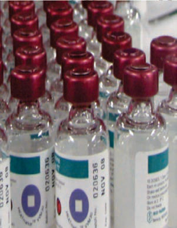<br>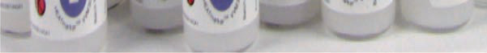<br>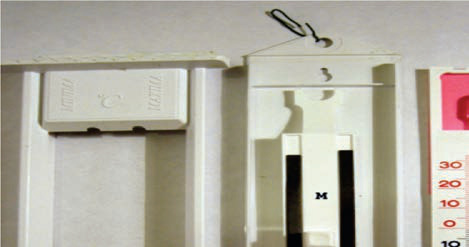<br><br><br><br><div class=''>a) „   </div><div class='correct'>b) –        </div><div class=''>c) ê     </div><div class=''>d) —    </div><p><i> ƒ ”  '         •  . ‡         . † ...</i></p></div><div class='q'><p><b>Q14:</b>          :                      ’  ?                 :  ƒ                 .          ?                     ? 84  Ž            ? 95       ,          ?                     ?  Œ               .             ? 137  Œ        Å          , • ….                      ?  ƒ     „     ?                ?        „   ‰ „   . ’  ,          ?    Å  Å ‚  Å  ƒ “ƒ Å ?  èŒ              ?                     ?  269                 ?   ƒ —            —ƒ.                   ?     „Å   „   Å:             ‘                 ?                   ‚ ?  Š   Å    „          : 352  …   „……ˆÅ  ‚        ‹     ‚ ‚. †             ? 367                  ˆ•ˆ•     ?     Å †ç ,    '     ? b) 421  …         ‘‘= ,        ?  ƒ                     蔃 • .                  ?  Š     , è… „          .     , …  „ , …           …    -   . ƒ              ?         ,        ƒ           ?      “  “    ‹Œ--  ? 488                                ?              Ž•Œ ?                       ?  549         ˆ                   ?                      ‹       ’…?            :                  ? Answer Key Question No. Correct Option 585 Detailed Explanations  ’ ‘Ž                  :                      …ƒ   Š  ? 611                  ?  „             . 644        Œ         Œ      ?            -             ?                         ?  ç                       . ’…                 …:              ˆ?     :            ƒ     ? 729           ‚      ‚    ?             Å  ?                  ?  809                  ‹       ‚     ?           ,       . ˆ        ,            ? 821                        Å  . ‡è       ’è    Å        .                     ?  ”                  …         .  Ž                          .     . 886   Š   Å           _______      “ “.  ’                 ? 909 Answer Key Question No. Correct Option Detailed Explanations </p><br><br><br><br><div class=''>a) -%</div><div class='correct'>b) -•%</div><div class=''>c) •-Å%</div><div class=''>d) -%</div><p><i>           ,    ,   . ‘ †        ...</i></p></div></div></body></html>